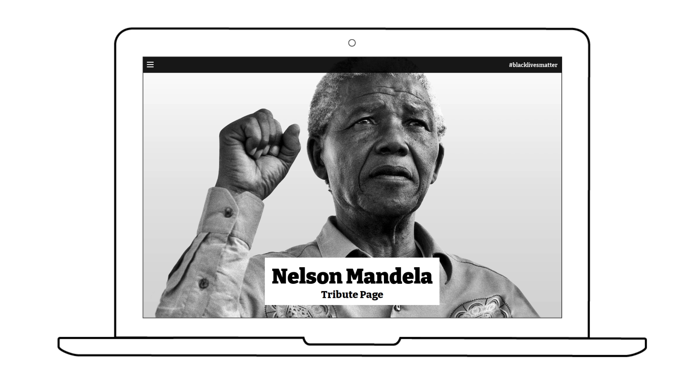
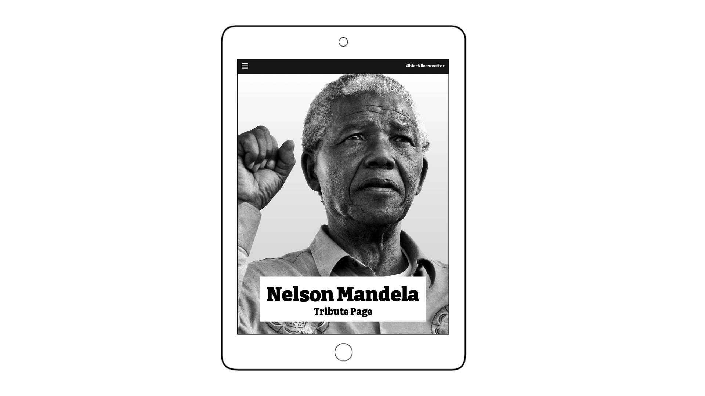
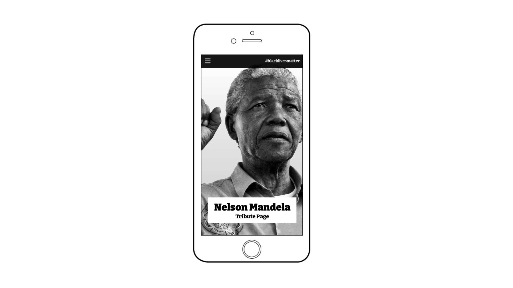
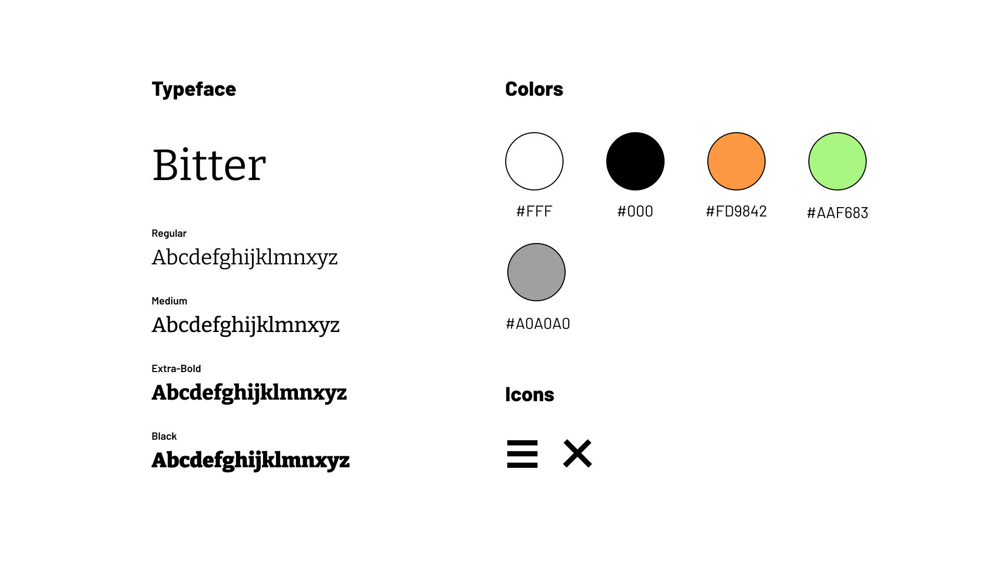
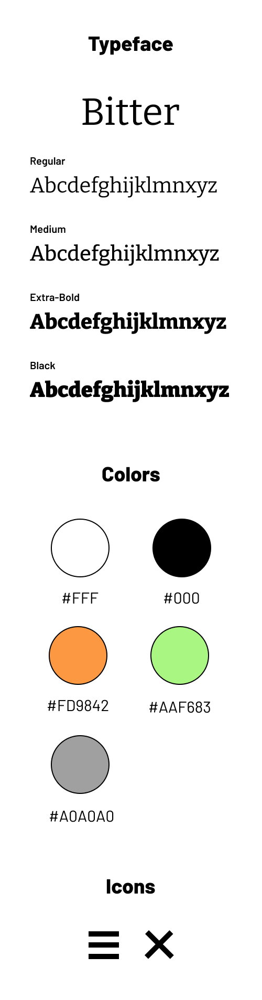

Nelson Mandela Tribute Page






This is a tribute page of larger than life Nelson Mandela.
The site was built with Sass and is fully
responsive for all
devices.
Web Design, Web Development
Responsive Website